SalmoSonar Visión
datasets · videos · predicciones · atención
base_yoloworld-salmon_river-test
Precisión53,3 %8 aciertos, 7 falsos
Recall11,8 %60 no detectados
F119,3 %IoU ≥ 0.5
IoU medio0,90de los aciertos
Error de puntos–de la diagonal de la caja
Tiempo106 mspor imagen
Modelo yolov8s-worldv2.pt [salmon,fish] · confianza mínima 0.25 · imagen 1024 px · dataset completo · split test
Dónde acierta y dónde se equivoca
5 de 67 imágenes sin ningún error. En cada imagen: ✓ acierto (IoU ≥ 0.5), FP detección sin etiqueta, FN etiqueta sin detección. Clic en una imagen para ver cajas, probabilidades y el mapa de atención.

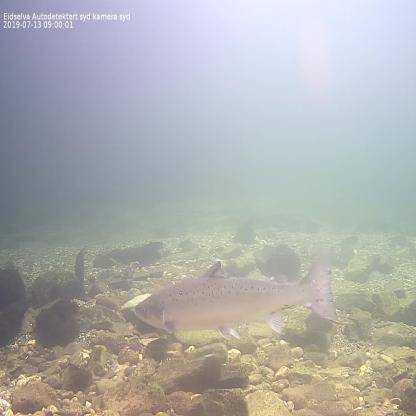
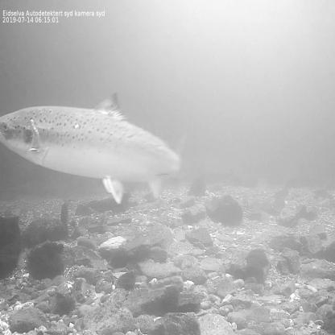
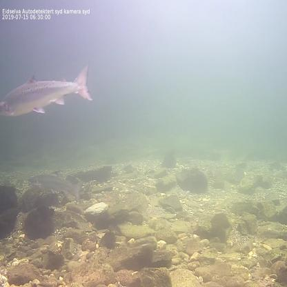
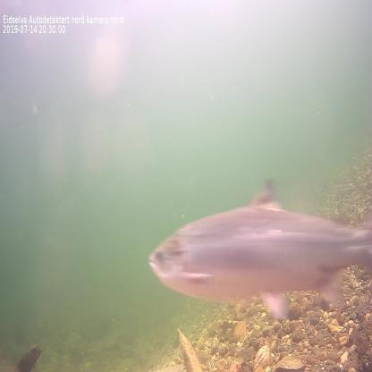
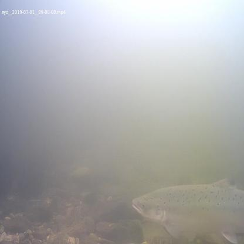
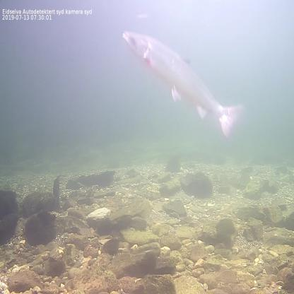
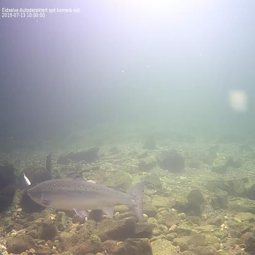
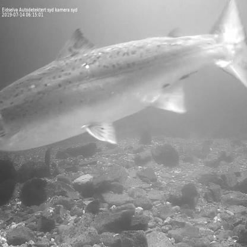
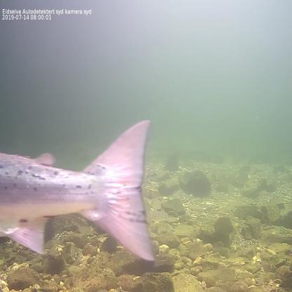
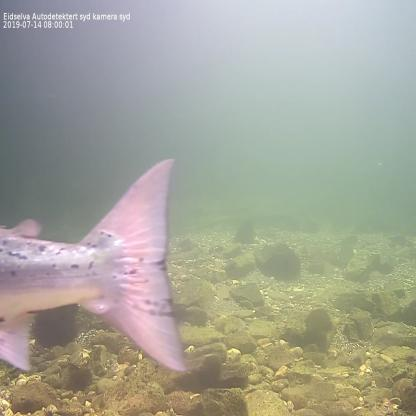
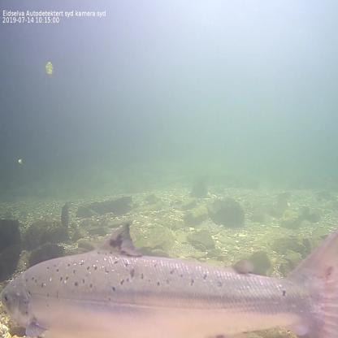